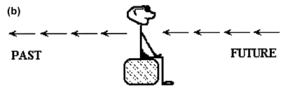

Since time is an abstract concept, we tend to use metaphors to talk about it. Interestingly, even though time does not actually exist in space, all human languages seem to organize time as if it exists as motion along some spatial continuum, front to back, top to bottom, left to right, east to west, etc.
Based on your answer to our question, you think in time moving terms. Check out the image below. You see time as moving past you, like the flow of a river.
The other predominant way of thinking about this is in ego-moving terms. This means that you see yourself as moving through time, as through a landscape. Time moves past you, like a river would flow past you